Paula Operations Manual
Cairo 3A · Module 4 — the dual-mode optimization engine that decides how many birds of which weight to slaughter to maximise profit. The cockpit is where planners launch and approve runs, sales teams submit demand and prices, the sales director reviews them, and everyone reads the plan, the market forecast and how the models performed — each person signed in with their own account and role.
- 13 screens + sign-in
- 6 roles
- Desktop ≥ 1280 px
- EGP · kg · tonnes
Tip: hover a numbered marker on a screenshot to highlight the matching callout. Click any screenshot to zoom — long pages scroll inside the zoom view.
What's new in this release
Paula has grown from a planning cockpit into a shared workspace for planners, sales teams and the sales director. If you knew the August manual, here is what changed.
- Personal accounts and roles. Everyone now signs in with their own email. What you see depends on your role, and the Admin's sidebar is grouped into Runs, Demand, Commercial, Run results and Analysis. Jump to… (⌘K / Ctrl K) finds any page you can open.
- Commercial inputs. A new section where sales teams submit demand and prices each cycle, and the sales director adjusts, approves and turns them into a demand set. It includes Discounts & rebates and Sales teams.
- Demand sets. Demand is now versioned, shareable and comparable, and a run can pick a saved set, not only a new upload or the model forecast.
- Three kinds of supply. The Planning form can run on the Weight forecast, a Saved harvest plan or Manual supply, with frozen storage dates and an Allocate SKUs switch.
- Approve and share a plan. One run per period can be marked as the approved plan. Runs are private to their creator until shared.
- Deeper run results. A Temperature tab explains each fresh-or-frozen decision, a Demand uplift tab shows what could recover a shortfall, and coverage chips explain why a category fell short.
- SKU Allocation and Frozen recommendations are back, both rebuilt. SKU Allocation is a configurable table for one run. Frozen recommendations says what to sell, part-sell or hold, to whom, and what waiting costs.
- Market Intelligence and Evaluation grew. Market adds SKU Factors and frozen views. Evaluation now scores nine models across Price factors, Demand and Weight, one month at a time.
- Settings can change things. Admins edit parameters with a reason and a version history, manage cutting options, SKU & customer mapping, and Users & Roles.
- Money is no longer absent from run results. Most of the page still uses factors and indices, but the Production plan now shows an average direct cost in EGP per bird, and the Demand uplift tab shows profit estimates to Admins and Planners.
Sign In
Sign in with your own Cairo 3A account. A refresh keeps you signed in; a new tab asks again.
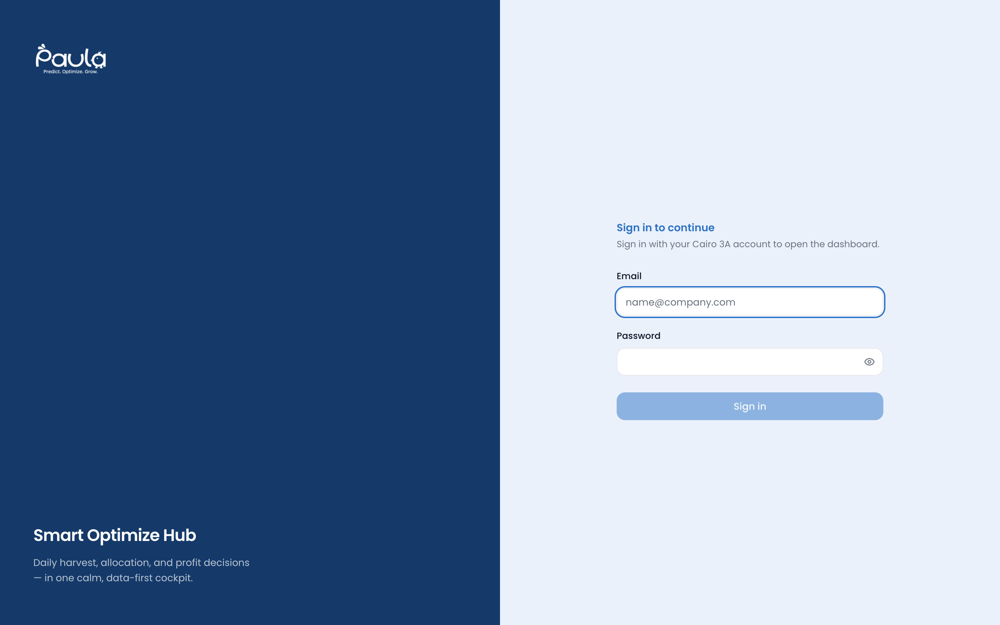
- Brand panel The Paula "Smart Optimize Hub" mark confirms you are on the right site.
- Email Your personal account. There is no self-signup: an Admin creates every account in Settings.
- Password Use the eye icon to reveal what you typed. There is no "forgot password" link, so ask an Admin to set a new one.
- Sign in Stays disabled until both fields are filled. Log out sits in your user card at the bottom of the sidebar and acts immediately.
If sign-in fails, the message tells you why: wrong credentials, sign-in not available, or the sign-in service could not be reached. When a session expires you are asked to sign in again.
Roles & Navigation
Your role decides your sidebar and what you can change. A person can hold more than one role. If you open a page your role cannot use, Paula says "You don't have access to this screen".
| Role | Sidebar | Can do |
|---|---|---|
| Admin | Everything, grouped: Runs, Demand, Commercial, Run results, Analysis | Everything, including Sales teams and the Admin sections of Settings |
| Planner / Ops | Planning, Run history, Demand sets, SKU Allocation, Frozen recommendations, Market Intel, Evaluation, Settings | Create runs, re-run SKU allocation, approve and share plans |
| Management / Viewer | Same list as Planner | Read only: no run form |
| Demand planner (sales rep) | Demand sets, Commercial cycles, Discounts & rebates, Settings | Own demand sets; submit demand, prices and terms for their own teams' channels |
| Sales director | Same list as Demand planner | Open cycles, review, adjust and approve commercial inputs and terms |
| Floor supervisor | Cutting sheet only | Read and download the cutting sheet |
The sidebar search (⌘K / Ctrl K) lists only pages your sidebar offers, plus Settings; it searches pages, not runs. The Notifications bell records finished and failed runs, plans shared with you, and changes to a demand set you use.
Planning
The home page. Admins and Planners configure the next run here, then press Run Optimization and land on the run's own page. Other roles see only Recent runs. The screenshot shows a Demand run, which adds the Demand data panel.
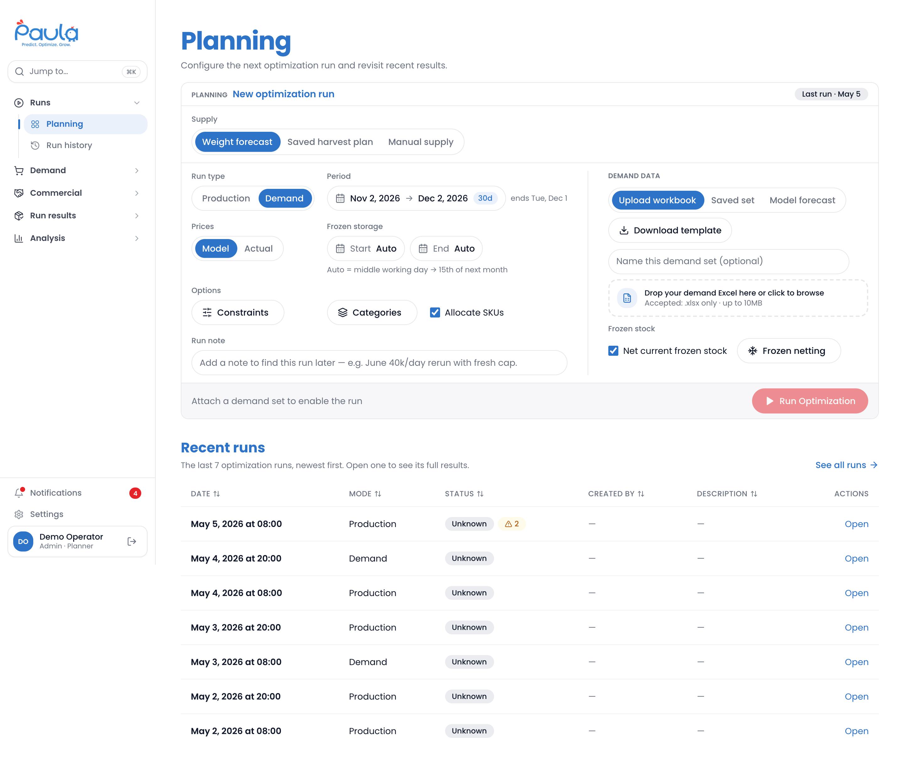
- Supply Weight forecast uses the forecast farm stock. Saved harvest plan (KSA or Egypt plans) must validate for the period before the run can start. Manual supply gives a per-day grid of birds and average live weight.
- Run type Production maximises profit from supply; Demand plans against a demand set. Your last-used mode is remembered.
- Period A two-month calendar. The past is fully open and the end date can reach at most one month ahead.
- Prices Model (forecast) or Actual. With Actual and Weight forecast supply, a Farm stock toggle appears. A fully past period defaults to Actual.
- Frozen storage Start and End dates, Auto by default: the middle working day through the 15th of next month. Start must fall inside the period, and End after Start.
- Options Constraints and Categories apply to this run only. Allocate SKUs is on by default; switching it off adds "no SKU allocation" to the readiness line.
- Run note An optional note that helps you find the run later in Run History.
- Demand data (Demand runs) Upload a workbook (template available, optional set name), pick a Saved set, or use the Model forecast, which must be previewed and confirmed. Model forecast is hidden for a fully past period.
- Frozen stock (Demand runs) Net current frozen stock is on by default. The Frozen netting panel shows Frozen demand, Sellable stock and Netted, and lets you exclude categories. It never blocks a run.
- Readiness line & Run Optimization The footer states what will run, or the one thing still blocking it. The red button starts the run and opens its results page.
- Recent runs The newest 7 runs, sortable, with a plan-warnings badge where relevant. Admins also see Created by. "See all runs" opens Run History.
The form is a draft that survives navigation. While a run is in flight, a banner shows live progress here and a floating pill follows you on every screen.
Run History
Runs you can open, newest first. Runs are private to their creator and Admins until shared, so your list depends on what you own and what was shared with you.
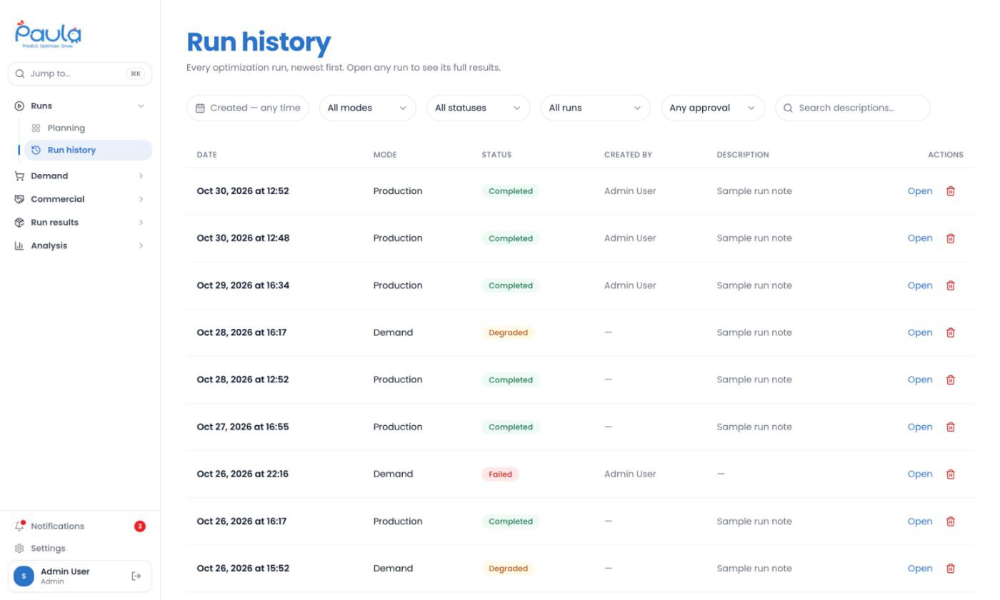
- Created-date filter Defaults to the last 3 days. Older runs are not missing: widen the window or use Clear filters, as in this screenshot.
- Mode & status Production or Demand; Completed, Degraded, Failed, Running or Queued. "Completed" includes degraded runs.
- Whose runs & approval All runs, My runs or Shared with me; Any approval or Approved only.
- Search Matches any part of the run's note, ignoring case. Runs with no note never match.
- Runs table Date, mode, a coloured status badge (plus Approved and plan-warnings badges) and the note. Click a row to open it. Created by shows for Admins.
- Open & delete Open goes to the results. The trash icon asks first; deleting is permanent, and a running run is stopped first.
Run Results
Every run has its own page, reached by starting a run, clicking a history row, or a shared link. A production run has 7 tabs and a demand run has 9: Supply · Demand* · Demand uplift* · Production · Allocation · What if · Matrix · Per-day · Temperature. The tab, scope and selections live in the page address, so a shared link reproduces what you see.
Header & Supply tab: what the run harvested
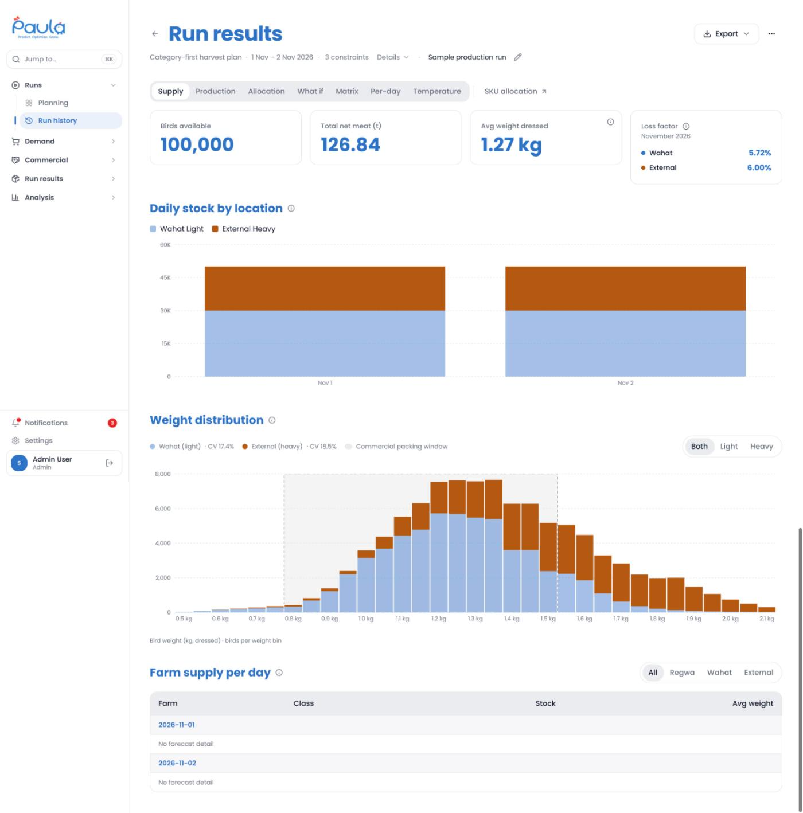
- Run identity The plan type, period, constraints count and your note (pencil to edit). Details holds the full chips, including each constraint honored, exceeded or removed. Approved runs show an Approved badge by the title.
- Export & run actions Export offers Export full plan, Supply plans, Cutting instructions, and Plan trace on demand runs. The … menu holds Approve plan, Share run and Delete run.
- Tab strip The tabs, then a SKU allocation ↗ link that leaves this page for the run's allocation.
- Supply KPIs Birds available, Total net meat (t), Avg weight dressed (live × 0.73), and each farm's monthly loss factor.
- Daily stock by location Birds taken each day, stacked by farm: the dark shade is the heavy flock, the pale shade the light flock.
- Weight distribution Birds per dressed-weight bin by farm, with a Both / Light / Heavy toggle, a CV per class, and the packing window marked.
- Farm supply per day Per-day, per-farm stock and average weight. A "Forecast" tag marks projected rows; untagged rows record what happened. Harvest-plan and manual runs open with a section showing the supply they captured.
Production tab: what the run produced, per category
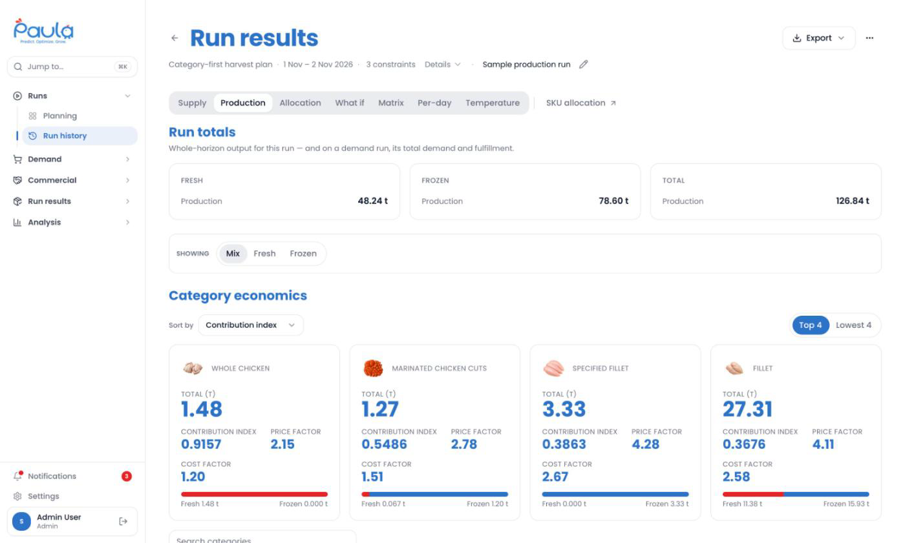
- Run totals Fresh, Frozen and Total production in tonnes. Demand runs add demand served and a Production achievement percentage.
- Scope bar Mix, Fresh or Frozen narrows Production, Allocation, What if and Matrix together. While narrowed, a ribbon reminds you the figures are not run totals.
- Category economics Top 4 or Lowest 4 cards, sorted by your choice of production, contribution, coverage or shortage. Below them, a searchable table of every category, and the Production plan table. Those tables are covered next in Yield & factors per cut.
Allocation tab — output by dressed-weight band
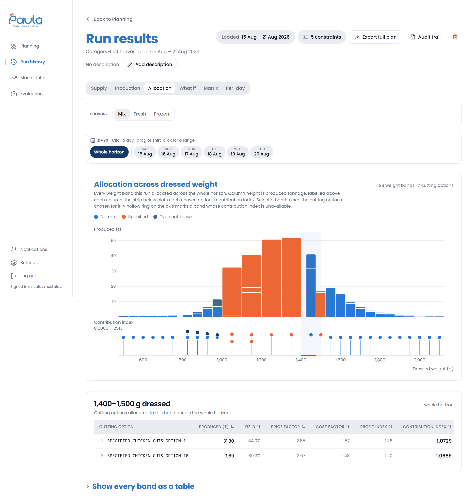
- Day-window filter A strip of day pills — click one day, or drag / shift-click a range — to recompute the whole tab for just those days. "Whole horizon" resets.
- Allocation spine A mass histogram over dressed-weight bands (column height = produced tonnes) above a strip plotting each chosen option's contribution index, on one shared weight axis. Every band is clickable.
- Band detail Select a band to see the cutting options allocated to it — produced tonnes, yield, factors and indices — each expandable into its category breakdown. A closed-by-default disclosure shows every band as one accessible table.
What if tab — why this plan, and what the alternatives were worth
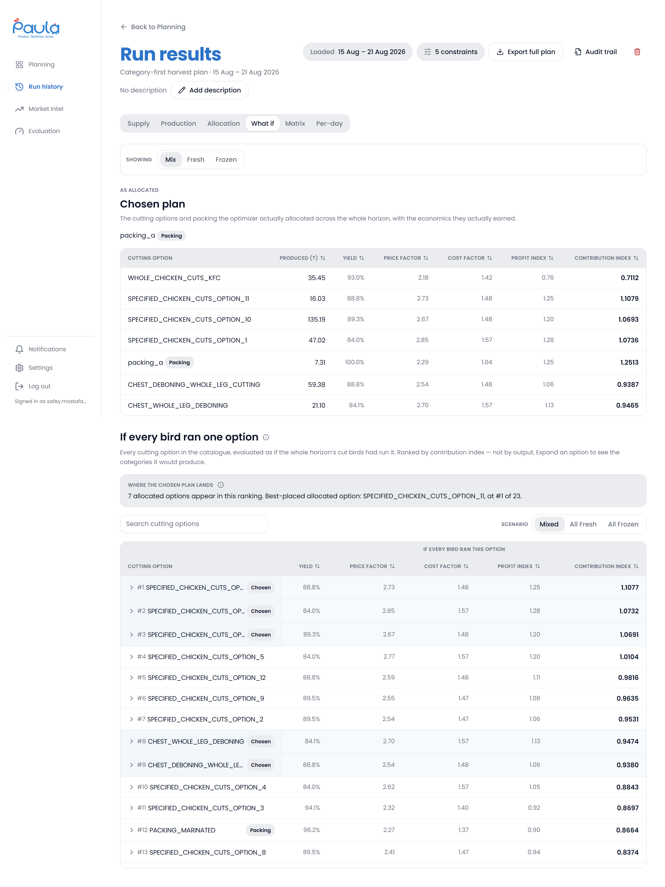
- Chosen plan The cutting options and packing the optimizer actually allocated, with the economics they actually earned — the only real tonnes on this tab.
- If every bird ran one option Every catalogue option evaluated as if the whole horizon had run it, ranked by contribution index. A verdict box names where the chosen option ranks and which option ranked first.
- Scenario toggle Mixed | All Fresh | All Frozen — three whole-bird scenarios, not a product filter. Expand any row to see every category that option would produce. "Not run-eligible" rows are shown for comparison, never as missed opportunities.
Matrix tab — day × category heatmap
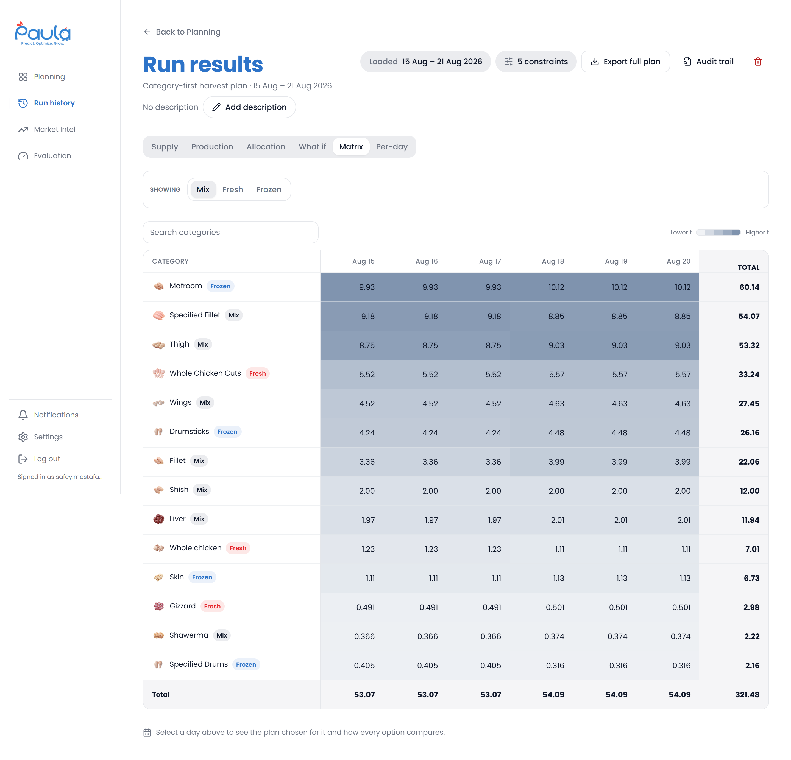
- Categories × days One row per category, one column per day; each cell prints its tonnes over a heat fill. An em-dash means nothing recorded — never zero.
- Cell hover Shows the tonnes, the fresh / frozen split, and the category's price and cost factors for that day.
- Totals A trailing Total column per category and a bottom Total row per day meet at the horizon's grand total.
- Day panel Click any day's header, cell, or total to open that day's plan below — the chosen options with cap attribution, plus the same what-if ranking at day grain, evaluated at the day's own representative weight.
Per-day tab — the day ledger
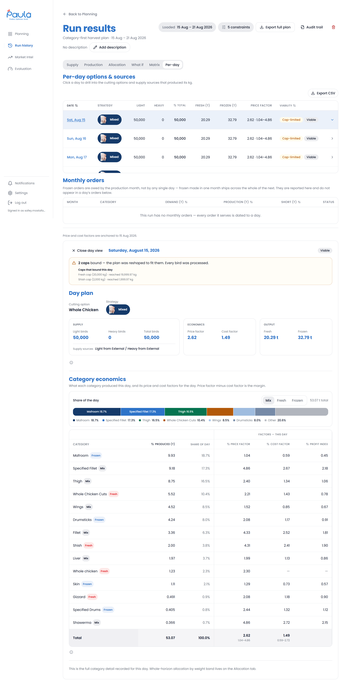
- Per-day options & sources One row per day — strategy, Light / Heavy / Total birds, Fresh and Frozen tonnes, the day's price-factor summary, and a viability badge ("Cap-limited" marks cap-bound days; breached days tint red). Export CSV at the top. This tab always shows whole-run figures.
- Monthly orders Frozen orders are owed by the production month, not by any single day — frozen made in one month ships across the next. Met / Breach status and an independent Unproduced / Part-produced badge per category pool.
- Day drill-down Click a day to open its detail: the day plan (cutting option, strategy, supply sources, recommended supply, price and cost factors, fresh/frozen output), the day's orders ledger, and its per-category economics with a share-of-day composition bar.
Demand tab — what a demand run served (demand runs only)
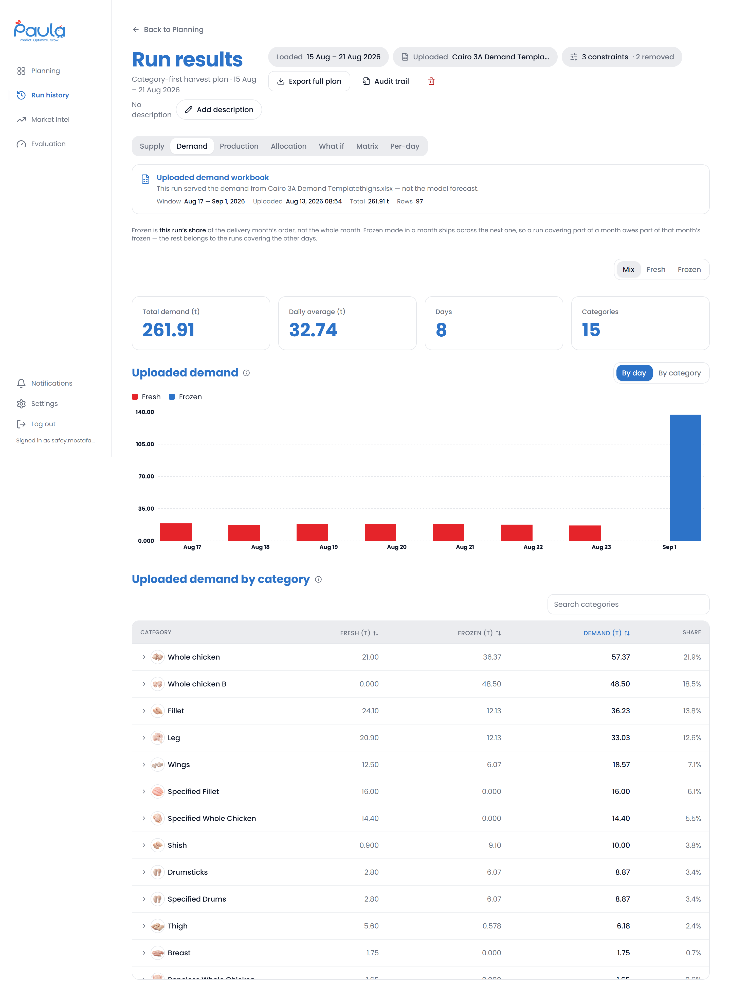
- Source banner Where this run's demand came from — an uploaded workbook, the model forecast, or the API — with its window, timestamps, total tonnes and row count. Always the run's own saved demand set, never the live preview.
- Demand KPIs Total demand (t), daily average, days, and categories — with a local Mix / Fresh / Frozen toggle when the set states temperatures.
- Demand chart Fresh (red) and Frozen (blue) side by side, switchable between a by-day and a by-category axis. Frozen is restated as this run's pro-rated share of the delivery month's order — the on-screen note explains it.
- Category table Each category's fresh / frozen / total demand and share of the window — expand a row for its per-day demand curve.
Demand uplift tab: what could recover a shortfall (demand runs only)
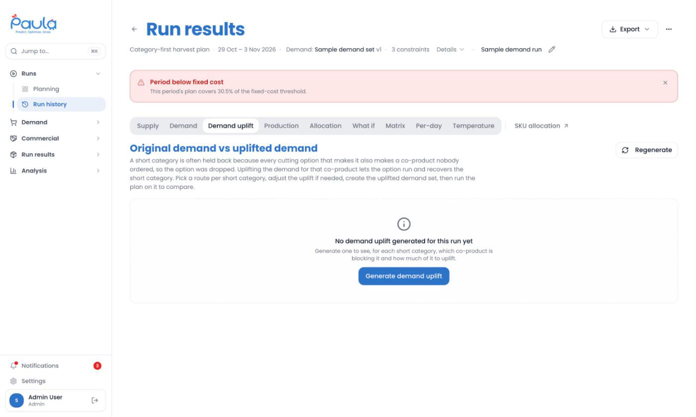
- Why uplift A short category is often held back because the cutting option that makes it also makes a co-product nobody ordered. Uplifting that co-product lets the option run.
- Generate demand uplift Finds the blocking co-product for each short category. Next, pick a route per category, edit the tonnes, then Create uplifted demand set and Run plan on uplifted demand.
- Regenerate & compare Regenerate refreshes the routes. Once the uplifted run exists, the tab becomes a two-column comparison with Compare all three plans: Production, Demand and Uplifted side by side.
Creating an uplifted set is a commitment to sell more, so the confirmation says so; nothing runs at that step and the routes then lock. Admins and Planners also see estimated profit in EGP here. Other roles read the tab, but the create and run buttons are replaced by a sentence naming the role they need.
Temperature tab: why each category ran fresh or frozen
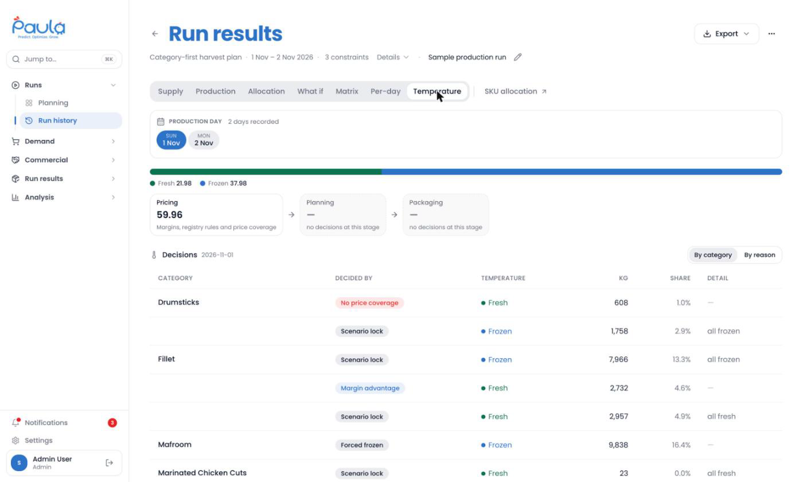
- Production day One day at a time. The day you pick is shared with the Matrix tab.
- Fresh / frozen bar The day's tonnes by temperature. A hatched slice marks kilograms a cap moved to frozen.
- Stage flow Pricing → Planning → Packaging: how much was decided at each stage. Planning holds output caps that reverse a priced choice.
- Decisions Every category's decision that day, grouped By category or By reason, with kilograms and share of the day.
- Decided by Forced frozen, Forced fresh, No price coverage, Scenario lock, Margin advantage, Tie → Fresh, Fresh cap overflow, or Later-month delivery.
Warnings, coverage, approval and sharing
- Plan warnings. A banner above the tabs lists what degraded the plan without failing it. It cannot be dismissed.
- Coverage chips. On Production's category table and Per-day's monthly orders, a chip names why a category fell short: Blocked by a co-product, Cap, Supply limit, No active option, Outside window, or Mixed. Click it for the routes to recover the shortfall.
- Approve plan (Admin, Planner). Makes a completed run the plan for its period. Only one run per period can hold the mark; if another does, the dialog says so and links to it.
- Share run (Admin, Planner). Pick a colleague and Can view or Can view and re-run. They get a notification, and cannot delete or re-share the run.
While a run executes, this page shows live progress with a day counter, and the results replace it when the run lands. A failed or cancelled run says so explicitly. Older runs may lack newer panels; for example, "No temperature decisions recorded" means they were not recorded, not that none were made.
The Allocation, What if, Matrix, Per-day and Demand screenshots above were captured in August. Their content still applies, but the page header and tab strip have since changed as shown on the Supply tab.
Yield, Price Factor & Cost Factor per Cut
For any cutting option a run chose, you can see what each cut yielded, what it sells for, and what it costs, relative to the live-bird price. Open a run, go to the Production tab, scroll to Production plan and expand an option.
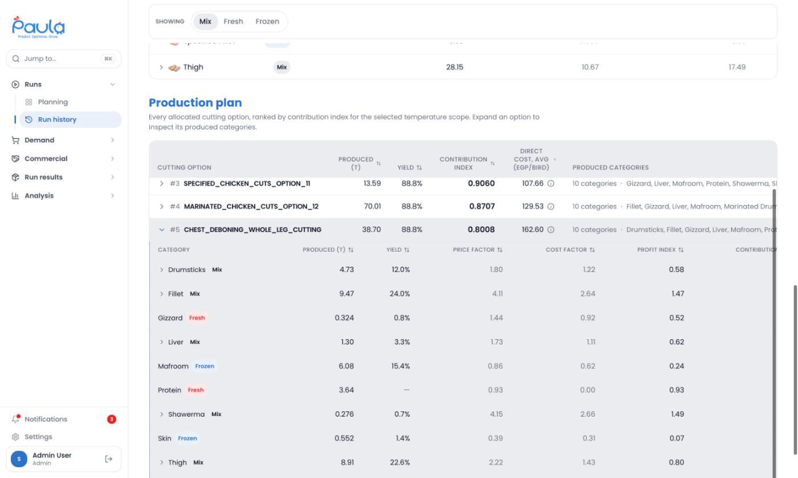
- Cutting option Ranked by contribution index. Each row shows produced tonnes, overall yield, contribution index, average direct cost and the categories it produced. Click the arrow to expand it.
- Yield The share of live weight that becomes this cut. A dash means no yield applies to that row.
- Price factor The cut's selling price as a multiple of the live-bird price. 1.80 means 1.8 × the live-bird price.
- Cost factor The cut's cost on the same scale, cost ÷ live-bird price, so it compares directly with the price factor.
- Profit index Price factor minus cost factor: the margin per unit of live-bird price, comparable across cuts. Contribution index follows in the next column.
- Direct cost, avg (EGP/bird) The option's average direct cost per bird, in EGP. Shown to economics roles when the run carries it; the info icon gives the breakdown.
How to read a row
From the screenshot: Drumsticks under this option made 4.73 t at a 12.0% yield, with a price factor of 1.80 and a cost factor of 1.22, so the profit index is 1.80 − 1.22 = 0.58. Fillet sells higher (4.11) and costs more (2.64), and still earns more per unit at 1.47. To turn a factor into money, multiply by the live-bird price: at an illustrative 70 EGP/kg, a factor of 1.80 is 126 EGP/kg.
Where else these figures appear
| Where | Yield | Price & cost factor | Notes |
|---|---|---|---|
| Production plan, expanded option | Yes | Yes | Per cut within one option. A Mix row expands again into its fresh and frozen slices. |
| Category economics table | Hidden by default | Yes | Per category across the whole run. Use Show or hide columns to add Yield. Expand a category for the options that produced it. |
| Allocation tab, band detail | Yes | Yes | The same figures for one dressed-weight band. |
| Matrix tab, cell hover | No | Yes | A category's factors on one day. |
| Per-day tab, day drill-down | No | Yes | The day's per-category economics. |
| Settings → Cutting Options | Yes, as Yield % | Fixed factors only | The recipe itself, not a run's result. Admins can edit it. |
| Market Intelligence | No | Price factor only | The forward forecast per category or SKU, not tied to a run. |
These figures are a run's own record: they reflect the prices and costs that run used, so two runs can show different factors for the same cut. Use the Mix, Fresh or Frozen scope to compare a cut's economics by temperature.
Demand Sets
The demand a plan serves: uploaded workbooks, model forecasts and approved commercial cycles, versioned by family. All economics roles can read them. Admins and Demand planners can edit. New sets come from Planning or an approved cycle, not from this page.
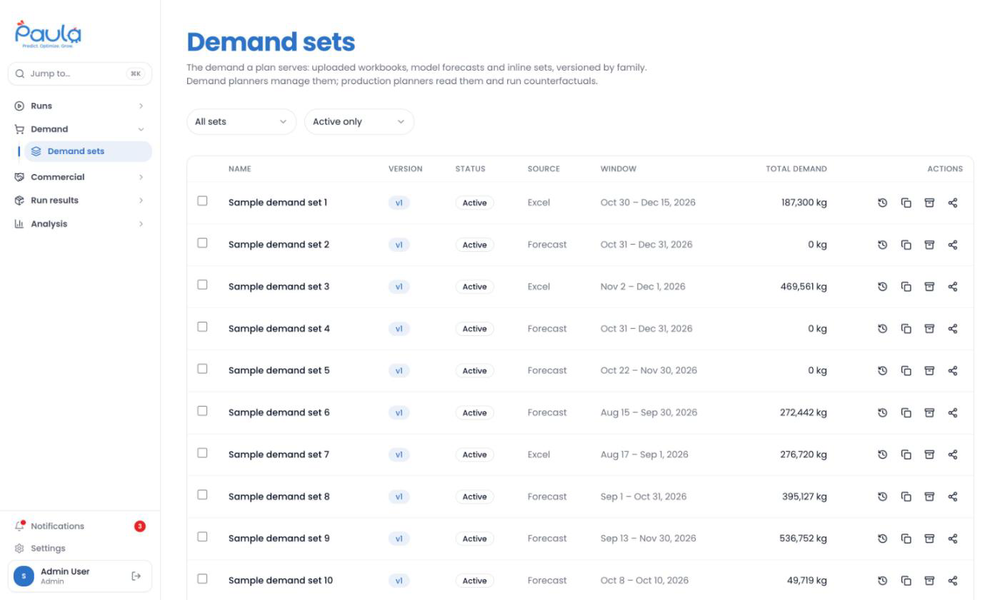
- Filters All sets, My sets or Shared with me; Active only or Include archived.
- Compare Tick exactly two sets, then Compare selected: per-category kilograms, right minus left. It creates no run.
- Version Click the badge for version history. A new upload on the same window adds a version.
- Source Excel, Forecast or Inline, with the set's window and total demand beside it.
- Actions In order: change log, clone (a new family at v1 owned by you), archive (reversible; runs built on the set keep working) and share (Can view or Can edit).
Inside a set
- Charts tab. Drag a day's value and give a reason; every override needs one. Save N overrides keeps them, and Save as new version leaves the original unchanged when offered.
- Promotions. + Promotion lifts one Sunday–Saturday delivery week, by % or kg, on a category or SKU, optionally for one customer or channel.
- Category grid tab. Category × temperature: Fresh by day, Frozen by month. Save to set writes changes directly, with no submit or approval. You can also download the Excel and upload it back, which replaces the set's category demand and price overrides.
Commercial Cycles
Each cycle is one submission window. Sales teams enter demand and prices per channel, customer and SKU, and the sales director reviews, adjusts and approves them. Approval creates a demand set that planners can run against.
- Open. The director presses New cycle and sets the window start and a length of 1–4 weeks.
- Teams submit. Each team works in its workspace, using Save draft and Submit to director. They can resubmit until review starts.
- Review. Start review locks the teams out. A team that did not submit keeps the forecast and never blocks approval.
- Adjust or return. The director adjusts figures, rejects lines (this cannot be undone), or uses Return to teams, after which only the returned teams can edit.
- Approve. Freezes the lines and creates a demand set, with approved prices as overrides. Reopen goes back to review; approving again creates a new version, and earlier sets and plans stay.
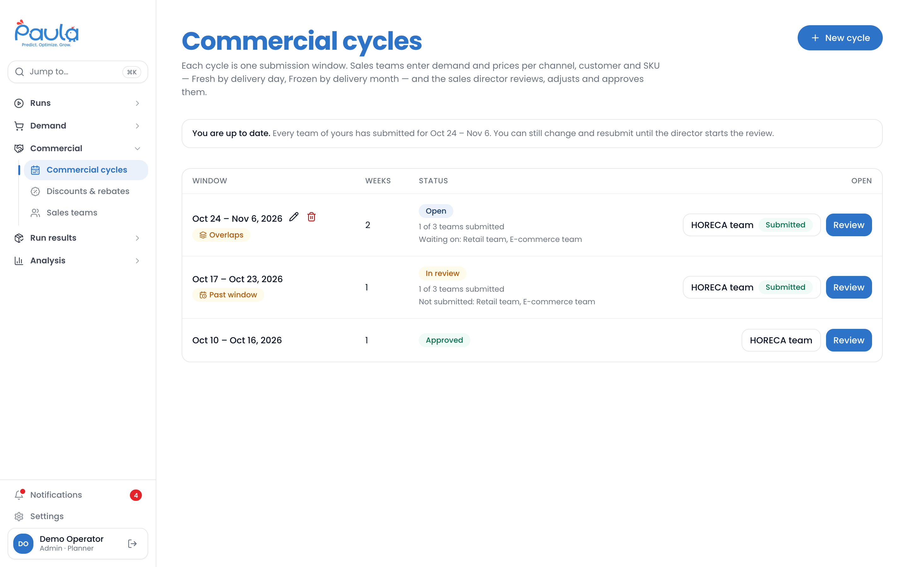
- New cycle Directors and Admins. The start must be at least 7 days ahead, Cairo time. Admins can also allow an overlapping window or a past window.
- Next step For sales reps, a line saying what to do next.
- Window Dates, with Overlaps or Past window badges where they apply. The pencil and trash edit or delete Open cycles only; deleting removes saved lines.
- Status Open, In review, Returned or Approved, with how many teams submitted and who is outstanding.
- Open Reps get a button per team; directors get Review.
Team workspace
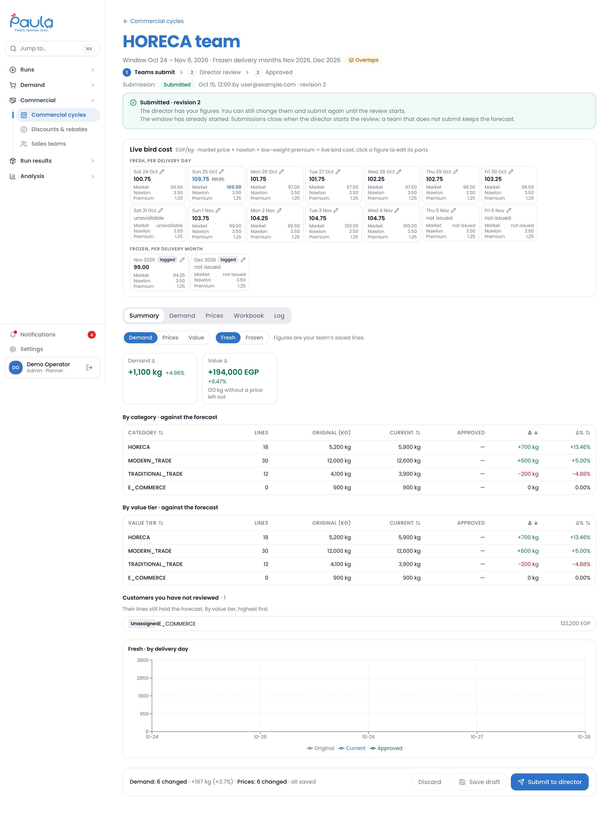
- Progress & submission Teams submit → Director review → Approved, with your submission's status and revision.
- Live bird cost Market price + nawlon + low-weight premium, Fresh per delivery day and Frozen per delivery month. Directors can click a figure to edit a part, with a reason; Remove override restores the issued price.
- Tabs Summary shows saved lines by category and segment, customers not yet reviewed, and the trend. Demand and Prices hold the lines. Workbook downloads a template and uploads it, replacing all of the team's lines. Log shows the history.
Editing is open while a cycle is Open or Returned to your team, and a changed value needs a reason. Fresh prices are a factor of the market live-bird price (0.5–5.0) with an EGP/kg estimate beside it. Frozen prices are in EGP/kg per delivery month.
Director review
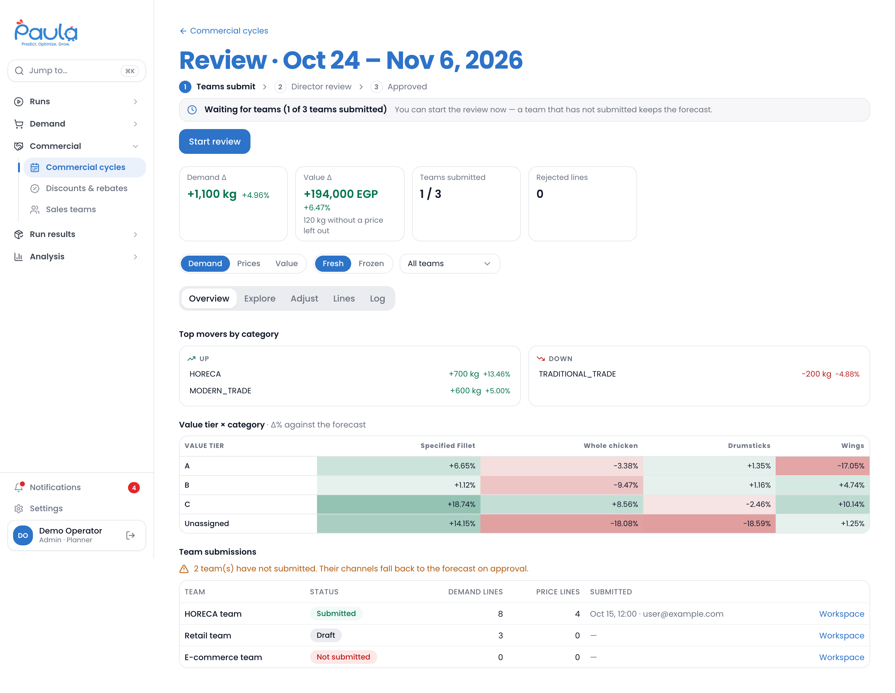
- Next step Where the cycle stands and what the director can do now.
- Actions Start review, Approve, Return to teams or Reopen, depending on the stage.
- KPIs Demand Δ, Value Δ, Teams submitted, Rejected lines and related totals, against the forecast.
- Page filters Demand, Prices or Value; Fresh or Frozen; one team or all.
- Tabs Overview, Explore (group or split by channel, customer, category, SKU, team or segment), Adjust, Lines and Log.
- Top movers The biggest moves up and down against the forecast.
- Segment × category A heatmap of change against the forecast, to spot where a segment moved.
- Team submissions Status and line counts per team, with a Workspace link to each.
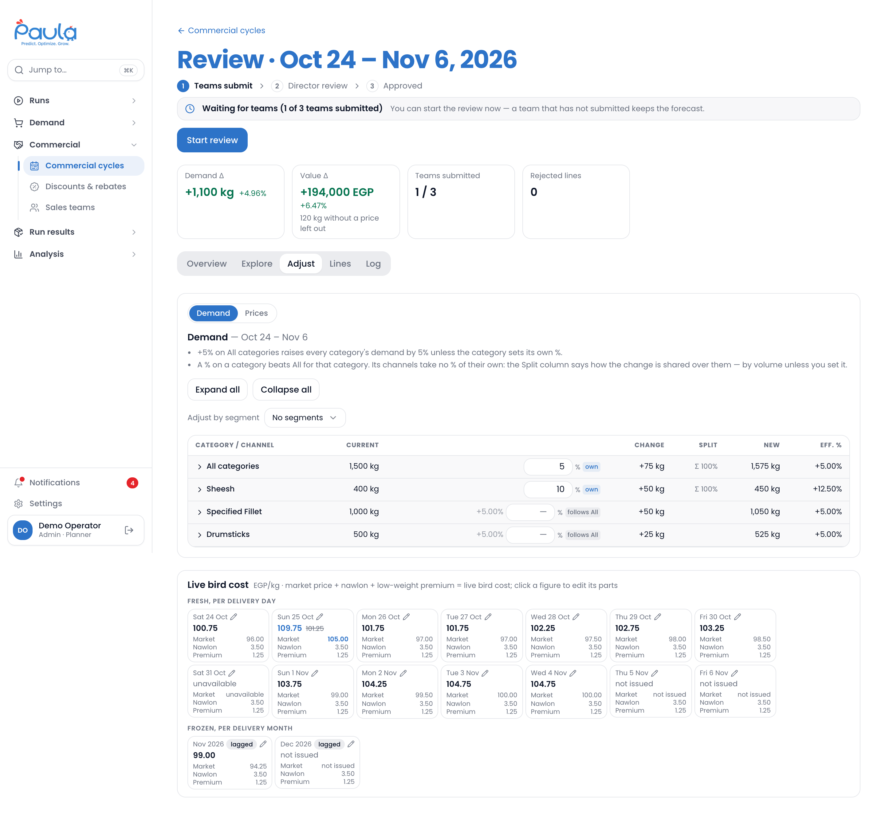
- Demand or Prices Fresh and Frozen prices are set separately, with a % on All, a category, a channel or a cell. A cell beats everything.
- Adjust by segment Available once segments are recorded. A segment % beats its cell. The first one locks the cycle to that dimension until no segment % remains.
- Percent per level A % on All categories applies everywhere unless a category sets its own. Channels take no demand % of their own.
- Split Shares a category's demand change across channels, by volume by default. It must total 100%, and Volume split resets it.
- Live bird cost The same strip as the workspace, editable by the director during review.
Adjust is editable only during review. Saving needs a reason, except when a change only removes a %.
Discounts & Rebates
A discount is a percentage off list price on a set of SKUs. A rebate is granted on every order in its window and clawed back if the customer misses the target. Nothing prices until the sales director approves it.
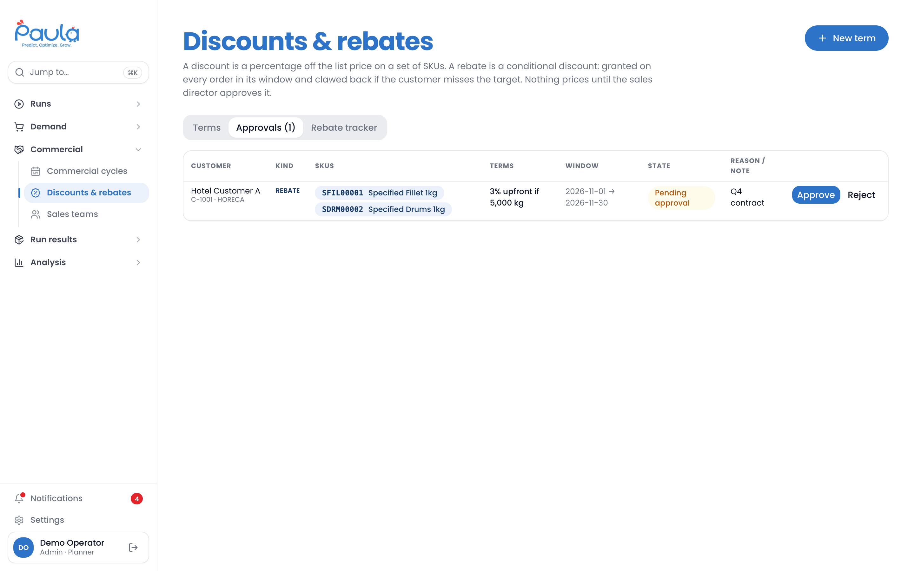
- New term One customer, many SKUs. A discount needs Discount %. A rebate needs Target basis, Target, Reward % and Valid to. All need Valid from and Reason. Save draft or Save & submit.
- Tabs Terms lists all terms by kind and state. Approvals is the director's queue and their default view; reps never see it. Rebate tracker shows approved rebates.
- Terms & window What was agreed, on which SKUs, and for how long.
- Approve or reject Directors can also End early, which is final and judges a rebate against a pro-rated target.
Rebate tracker shows progress, on-track state and clawback for each approved rebate. Record progress takes cumulative figures and a required note.
Sales Teams
Admin only. Assign each channel to the team that sells into it, and the people to each team. A team submits demand, prices, discounts and rebates for its own channels only.
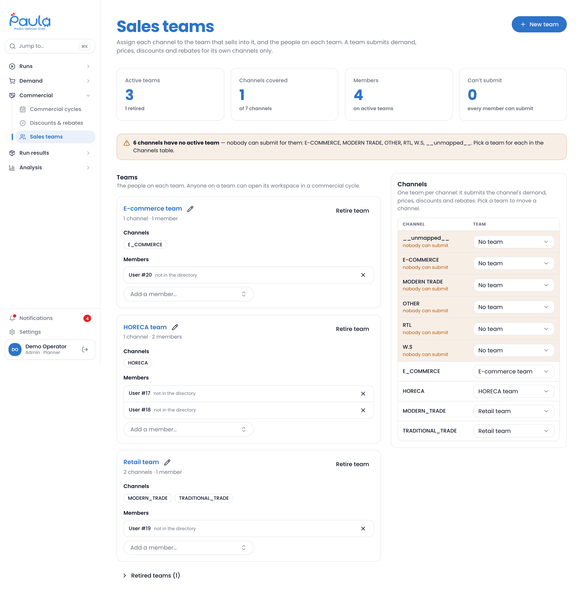
- New team Create a team, then rename it with the pencil.
- Coverage at a glance Active teams, Channels covered, Members and Can't submit, which counts members without a sales role.
- Uncovered channels Names every channel with no active team, because nobody can submit for it.
- Team cards A team's channels and members. Add a member picks from the directory. Retire team asks first, releases its channels and removes its workspace from members; a retired team can be reactivated or deleted, and cycles keep their lines.
- Channels table One team per channel. Pick a team to move a channel.
SKU Allocation
How one run's kilograms reached channels, customers and SKUs. The sidebar link opens the newest completed run; the Run menu switches runs, and a run's SKU allocation ↗ link opens its own. Fresh and Frozen are never mixed.
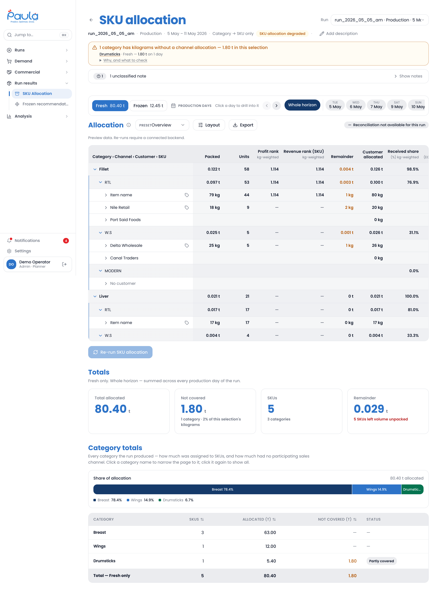
- Warnings Kilograms without a channel allocation, by category, with "Why, and what to check". Policy and valuation-wait banners appear here too.
- Notes One line counting shortfalls, data problems and disclosures, with Show notes to read them.
- Fresh | Frozen Each button shows its tonnes. The page shows one temperature at a time.
- Period strip Fresh uses production days and Frozen uses selling weeks. Click to drill in; Whole horizon resets.
- Preset Overview, By customer, By SKU or Hierarchy. "Custom" means you changed the layout.
- Layout A panel with Rows & columns, Measures and Filters. Nothing changes until Apply layout. Your layout is remembered in this browser.
- Export Admin only.
- Re-run SKU allocation Admin and Planner. Demand runs with SKU hierarchy can also Edit modes, then Apply modes & re-run. If the run skipped allocation, Allocate SKUs now appears instead.
- Totals Total allocated, Not covered, SKUs and Remainder for the current selection.
- Category totals Each category's share and its allocated and not-covered tonnes. Click a name to narrow the page to it.
Frozen Recommendations
What to sell this week, what to hold, and to whom, per frozen SKU, read from a plan run. It is advisory only: nothing here changes a plan or a stock record.
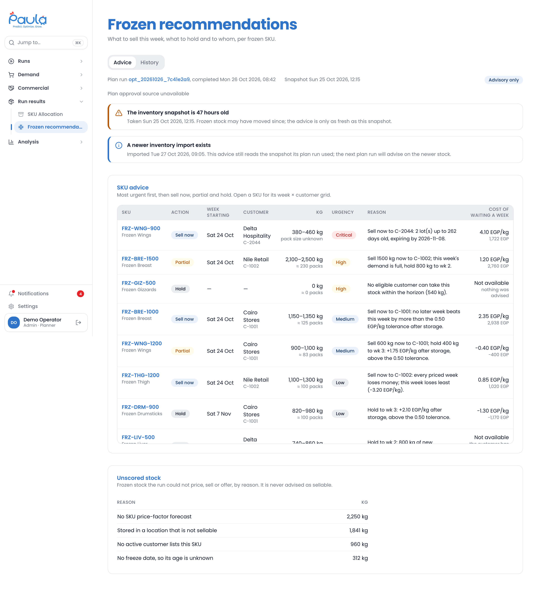
- Advice | History History lists past plan runs with their status and action counts. Open one to pin it; "Back to the latest advice" returns. Failed runs show their reason and do not open.
- Source line The plan run and inventory snapshot behind the advice, and whether it is the approved plan.
- Freshness banners Warn when the snapshot is over 24 hours old, a newer import exists, or an import failed.
- SKU advice Most urgent first. Click a SKU for its grid of weeks × customers, split into From stock and To be produced, with List, Discount, Rebate, Net, Storage and Margin per cell.
- Action Sell now, Partial or Hold, with the week starting (weeks start on Saturday), the customer and the kilograms.
- Urgency & reason Critical, High, Medium or Low, with a plain sentence saying why.
- Cost of waiting a week What holding costs, per kg and in total. A negative figure means waiting is better.
- Unscored stock Frozen stock the run could not price, sell or offer, by reason. It is never advised as sellable.
Market Intelligence
The models' forward view of the market, in three tabs: Price Factor, SKU Factors and Demand Forecast. It is forecast-only; realized actuals and accuracy live on Evaluation.
Price Factor tab
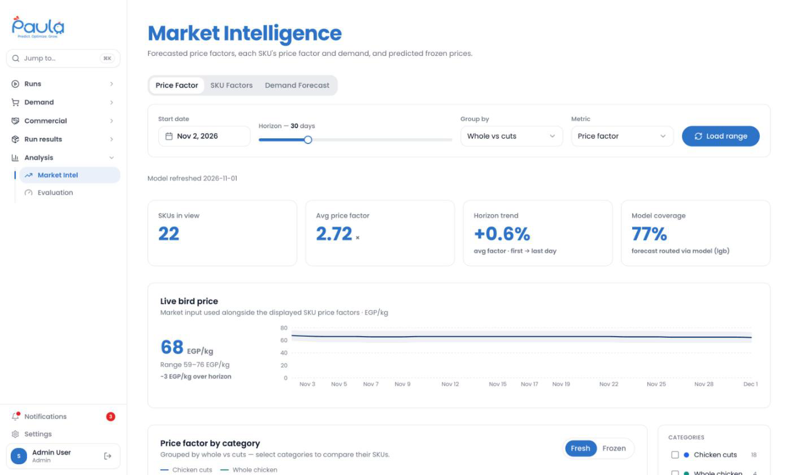
- Range controls Start date, horizon, group-by and metric (Price factor or price per kg). Nothing reloads until you press Load range.
- KPI row SKUs in view, Avg price factor, Horizon trend and Model coverage: the share of forecasts routed via the model, not a lookup fallback.
- Live bird price The farm-gate input every price factor multiplies, with its range and a band chart of the uncertainty.
- Price factor by category One line per group; tick groups in the rail to drill into SKUs. A factor of 2.40 means 2.4 × the live-bird price. Below it, a price grid with CSV, where "—" means no prediction, not zero.
- Fresh | Frozen Switches this card and the grid to frozen price per kg by category. The KPIs and the rest of the tab stay fresh.
SKU Factors tab
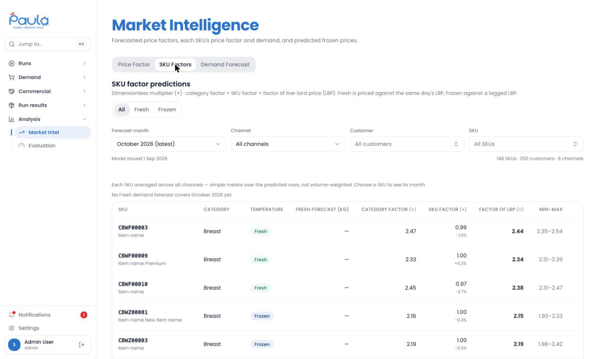
- SKU factor predictions Category factor × SKU factor = factor of live-bird price (LBP). Fresh prices against the same day's LBP, Frozen against a lagged LBP.
- Temperature All, Fresh or Frozen.
- Scope Forecast month, then Channel → Customer → SKU. Choose a SKU to see its month.
- SKU table Fresh forecast (kg), Category factor, SKU factor, Factor of LBP and its min–max. "How accurate is it?" links to Evaluation.
Demand Forecast tab
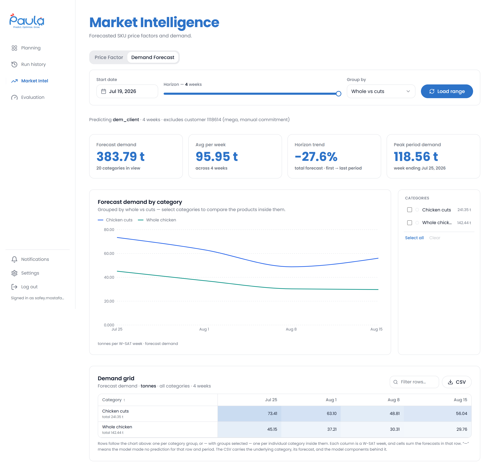
- Weekly controls A Fresh / Frozen toggle, start date, group-by and horizon: 1–4 weeks for Fresh, 1–9 for Frozen. Weeks end on Saturday. Frozen only loads ranges a saved run covers, with a "Load available range" shortcut. This tab keeps its own range.
- Forecast KPIs Total forecast demand (t) · average per week · horizon trend · peak week. All tonnes; forecast-only — no actuals anywhere on this tab.
- Forecast demand by category Tonnes per week-end date, per category group — drill into individual categories via the rail, which also shows each group's window total.
- Demand grid + CSV Category × week matrix with a "top 10" badge on the model's top categories. Careful: the CSV exports raw kg (×1000 vs the screen) and carries the model components behind each blended number.
The Demand Forecast screenshot was captured in August and shows the Fresh view; the Fresh / Frozen toggle has since been added.
Evaluation
How the forecast models performed against what actually happened, one month at a time. Three tabs cover nine models. Each model shows the same layout: a one-sentence verdict, four scores, a chart, a table and a note on how it is scored.
Price factors tab
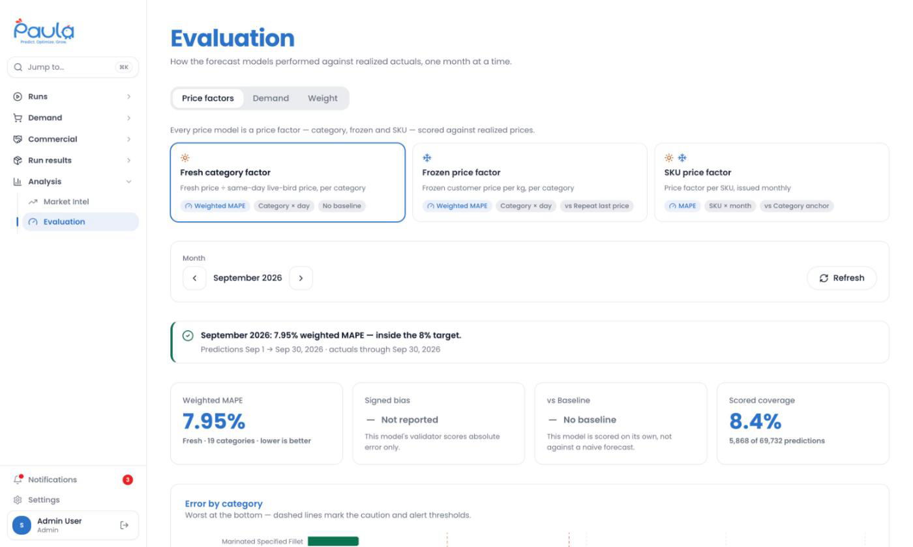
- Tabs Price factors, Demand and Weight. The month you pick carries across models.
- Model cards Fresh category factor, Frozen price factor (against repeating the last price) and SKU price factor (against the category anchor). Each card names its metric, grain and baseline.
- Month Step with ‹ and ›, or Refresh. The current month scores only the actuals so far.
- Verdict One sentence on how the model did against its target.
- Four scores Error, signed bias, comparison with the baseline, and how much was scored. Below them: error by category (green ≤ 8%, amber 8–15%, red above 15%) and a table with CSV. Fewer than 5 rows is flagged low sample.
Demand tab
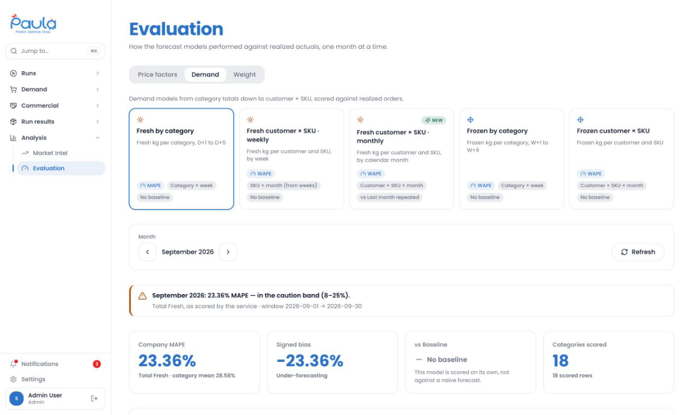
- Model cards Fresh by category, Fresh customer × SKU weekly and monthly, Frozen by category, and Frozen customer × SKU.
- Verdict Demand uses looser bands: amber from 8%, red only above 25%.
- Company error & bias The Total Fresh figure and its signed bias: positive over-forecasts, negative under-forecasts.
Weight tab
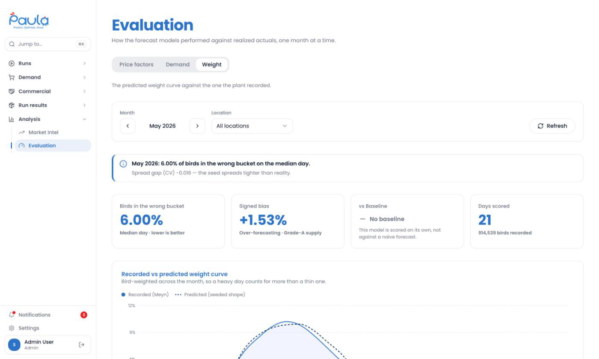
- Month & location One calendar month and a location, then Refresh. A month with no recorded history shows an empty state, not an invented score.
- Verdict The share of birds in the wrong bucket on the median day, and whether the predicted shape spreads wider or tighter than reality.
- Four scores Birds in the wrong bucket, signed bias in Grade-A supply, baseline, and days scored with birds recorded.
- Recorded vs predicted curve The plant's own Meyn histogram against the predicted shape, weighted by birds. Further down: where the gap sits per bucket, and spread over time.
This tab scores shape error only. Both curves use the same 33-bucket dressed-weight grid, and days with no recorded history are skipped because the plant does not run every calendar day.
Settings
The engine's configuration, plus the Admin tools behind it. Non-admins see Configuration only, read-only, with its change history. Cutting Options, SKU & customer mapping and Users & Roles are for Admins.
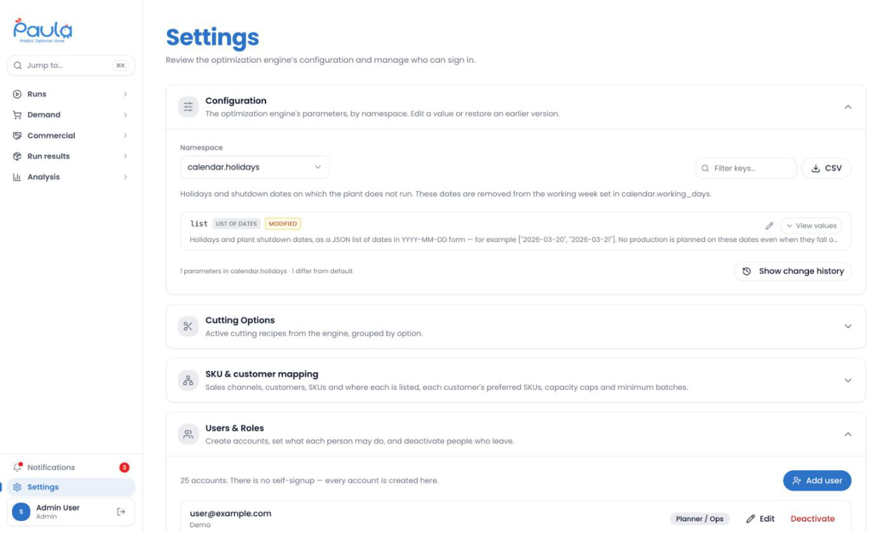
- Configuration Parameters by namespace, each with its type and value. A "Modified" badge marks values changed from their default. Filter keys, or download the namespace as CSV.
- Edit & view The pencil asks Why are you changing this? and then Save change (Admin only). View values opens structured values as Fields or Raw.
- Show change history Version, who, when and why. Restore brings back an earlier version and is recorded as a new one.
- Cutting Options Admin only. New option, Duplicate, Disable / Enable (options are disabled, never deleted), and in-place edits of yield, role, fixed factors, grades and weight band.
- SKU & customer mapping Admin only; covered below.
- Users & Roles Admin only. Add user, then Edit roles and passwords (minimum 8 characters; blank keeps the current one). Deactivate and Reactivate; users are never deleted, and you cannot deactivate yourself.
SKU & customer mapping
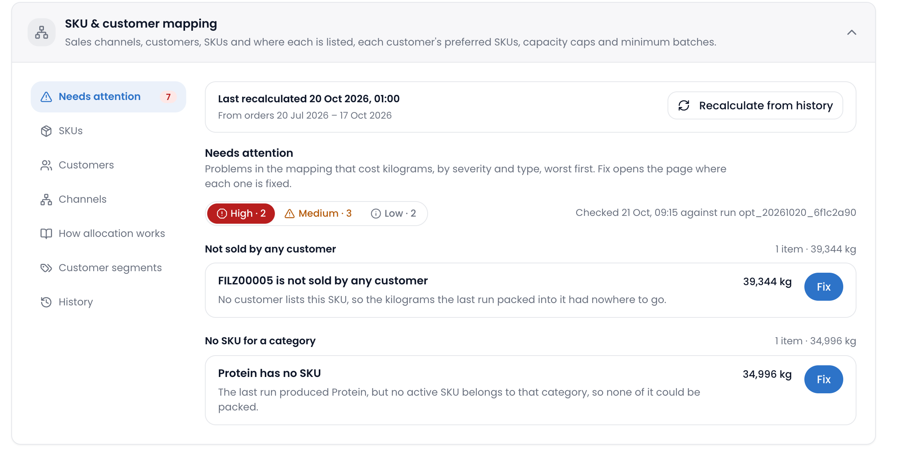
- Views Needs attention, SKUs, Customers, Channels, How allocation works, Customer segments and History.
- Recalculate from history Refreshes saved figures from the last 90 days of orders, after a confirmation. Manual figures are kept.
- Needs attention Mapping problems that cost kilograms, by High, Medium and Low severity, worst first.
- Fix Opens the page where that problem is fixed.
- Customer segments Dimensions & values, customer segments (with Import), channel groups and Recalculate. How allocation works walks through the path of a kilogram, with its limits and profit order.
- History Who changed what, filterable by type of item.
Cutting Sheet
The Floor supervisor's only screen, titled "Cutting instructions". It shows the sheet for the newest completed run: which birds go to which cut, in which weight band, and the output to expect.
- Today's cutting sheet. Shows when the plan was published, and the sheet on screen with cutting quantities only: no prices, costs or margins.
- Download the sheet. An Excel file for the floor. Other roles get the same sheet from a run's Export → Cutting instructions.
- Empty state. "No plan has been published yet" means no run has completed.
Plan Analysis Agent
A planned assistant that will let planners ask about, set up and compare plans in plain English or Arabic, working through Paula's existing models. Nothing in this chapter is available today, and scope and targets may change before it ships.
What it will do
| You ask | The agent |
|---|---|
| "Why is Mafroom short next week?" | Reads the latest run's coverage and warnings, and names the cause. |
| "Plan Saturday with 10% more Fresh demand at Regwa" | Drafts the run for your approval, launches it, then compares it with the run it came from. |
| "What happens to margin if live-bird price rises 5%?" | Runs a cost what-if and reports the change per cutting option. |
| "Which frozen SKUs should we sell now?" | Reads the sell-now and hold advice, with reasons and the cost of waiting. |
| "How accurate was last month's demand forecast?" | Reads the evaluation results by category. |
How it will analyze and compare plans
- Explain a run. In a few lines: what was produced, what was short, and why, instead of reading the warnings and tables by hand.
- Compare two runs. Summarize each and report the difference, so a what-if no longer means comparing two runs by eye.
- Flag problems early. Point out forecast drift, stale frozen stock, unmet demand and price anomalies before anyone opens the screen.
The models decide; the agent explains
The agent chooses which of Paula's models to ask and explains what they return. It never makes a forecast, price or plan itself.
| Decision | Made by |
|---|---|
| How much demand, by category, customer and SKU | Paula's demand forecasts |
| What a SKU will sell for; price and cost factors | Paula's price and cost models |
| What weight and stock reach the plant | The weight and stock forecast |
| What to harvest, cut, and freeze or sell fresh | The optimization engine |
| Who gets each kilogram | SKU allocation |
| Sell now, part-sell or hold each frozen SKU | Frozen recommendations |
| How far to trust a forecast | Evaluation results |
The rules it will follow
- You approve every change. It can read freely, but a run, cost what-if or saved-input change is only a proposal until you press Approve. Every proposal, approval and action is logged for Admins.
- Your role, nothing more. It sees only what you can see. Margin and price data stay limited to the roles allowed today.
- Every figure has a source. Answers cite the run, forecast or service behind each number, and unknowns are stated, never filled in. Questions outside planning are declined.
- Zero data retention. No customer, price or sales data is kept in a model provider, vector store or agent memory. Customer names are masked before the model sees them, and only an audit record outlives a session.
Rollout is planned in phases, read-only first, with each later phase starting only when the one before passes its checks. Dates have not been set.
A typical day with Paula
A common planning routine takes 10–15 minutes, plus the time a run takes.
- Sign in with your own account. Planners land on Planning.
- Configure the run: choose the supply, Production or Demand, the period and prices. On a Demand run, upload a workbook, pick a saved set such as an approved commercial cycle, or use the model forecast.
- Optional per-run tweaks: Constraints, Categories, frozen storage dates, and the Allocate SKUs switch. These apply to this run only.
- Press Run Optimization. You are taken to the run's page. The floating pill follows you if you navigate away, and the bell records the result.
- Read the results tab by tab: Supply, Production (expand an option for each cut's yield, price factor and cost factor), Allocation, What if, Matrix, Per-day and Temperature. On a Demand run, add Demand and Demand uplift.
- Watch the alerts: plan warnings, a red "Period below fixed cost" banner, red-tinted breach days, "Cap-limited" badges, and coverage chips.
- Approve and share: Approve plan marks the run as the plan for its period, and Share run gives colleagues access. Export the full plan and the cutting instructions for the floor.
- Check where the kilograms go: SKU Allocation for customers and SKUs, Frozen recommendations for what to sell or hold.
- Sanity-check the market: Market Intelligence for predicted factors, the live-bird band and the demand forecast. Periodically, use Evaluation to confirm the models still deserve trust.
Sales teams and the director work on the cycle's own rhythm: teams submit, the director reviews and approves, and the approved demand set is ready for the next run.
Runs keep going if you close the page; reopen them from Run History or the bell. Loading can be slow on a cold start, so a view that spins for up to a minute and then recovers is normal.
Glossary
- EGP
- Egyptian pound. Appears on Market Intelligence, Commercial, Frozen recommendations, and in a few places on run results: direct cost per bird, and profit estimates for Admins and Planners. Most run figures are factors and indices.
- Horizon
- The planning window an optimization run covers — a range of working days.
- Production mode
- Default run type — the engine maximises profit from available supply, with no demand orders.
- Demand mode
- Run type that plans against a demand set: an uploaded workbook, a saved set, or the model forecast.
- Demand set
- The versioned demand a run serves. Saved with the run, so the run page always shows its own set, never the live forecast.
- Light / Heavy bird
- The two flock weight classes. Their split per day shows on the run's Supply and Per-day tabs.
- Fresh
- Product sold in the production month, not frozen.
- Frozen
- Product moved to cold storage — made in one month, delivered across the next. Frozen orders are owed by the month, not by any single day.
- Strategy
- How a day's output splits across fresh and frozen: All Fresh, All Frozen, or Mixed.
- Temperature scope
- The Mix | Fresh | Frozen filter on the run page's Production, Allocation, What if and Matrix tabs. While narrowed, figures are not run totals — a ribbon says so.
- Dressed weight
- A bird's weight after processing ≈ live weight × 0.73 (the plant's standing loss factor). Weight bands and distributions are in dressed grams.
- Weight band
- A dressed-weight range (e.g. 1,200–1,300 g) that output is allocated into — the grain of the Allocation tab.
- Loss factor
- Per-farm monthly rate of executed rejects plus mortality over total harvested — shown on the Supply tab.
- Cutting option
- A cutting recipe the engine can apply (e.g. Chest Deboning, Whole Chicken), defining how a carcass splits into products. Recipes are listed in Settings.
- Packing
- Whole-bird packing as a producer, allocated per weight band. Packing-only categories can never be deselected from a run.
- Byproduct
- A category that falls out of the cut regardless (e.g. offal) — deselecting it changes nothing, and uploaded byproduct demand is ignored.
- Price factor
- A category or SKU's predicted selling price as a multiple of the live-bird price — 2.40 means 2.4× the live-bird price that day.
- Yield
- The share of live weight that becomes a cut or a cutting option's output.
- Cost factor
- The cost side expressed the same way: cost ÷ live-bird price. Price factor minus cost factor is the margin per unit, the profit index.
- Profit index
- Price factor minus cost factor — dimensionless margin, comparable across categories.
- Contribution index
- The optimizer's ranking measure for a cutting option — how much a tonne through that option contributes. What-if rankings sort by it, not by output.
- What-if scenario
- A counterfactual: how every catalogue option would perform if the whole horizon (or one day) had run it — under Mixed, All Fresh, or All Frozen. The only actual tonnes on that tab are in "Chosen plan".
- Fixed cost (FC)
- The cost threshold the period must cover. The run page reports coverage as a percentage only — no EGP figure is shown.
- Viability
- A day's status against fixed cost on the Per-day tab; breached days tint red.
- Cap-limited
- A day or option clipped by a maximum constraint. A warning, not an error — exceeded soft caps are supported outcomes.
- Constraint
- A limit the optimizer must respect (birds, kg, or percentage; hard or soft; per day or per period). Durable constraints live in configuration; per-run overrides in the Planning form.
- Degraded
- A run recorded as completed whose result carries a caveat — shown amber in run lists; the "Completed" filter includes it.
- Live bird price
- The modelled farm-gate price per kg of live chicken that every price factor multiplies.
- Model coverage
- On Market Intelligence: the share of forecasts routed via the LightGBM model rather than a lookup fallback.
- MAPE
- Mean absolute percentage error — the Evaluation screen's headline accuracy measure. Lower is better.
- Bias
- The signed direction of forecast error — positive is over-forecasting, negative under-forecasting.
- CV
- Coefficient of variation — a unitless measure of how spread out the flock's weights are.
- Commercial cycle
- One submission window in which sales teams enter demand and prices and the sales director approves them, creating a demand set.
- Nawlon
- The transport component of the live bird cost: market price + nawlon + low-weight premium.
- Rebate
- A conditional discount, granted on every order in its window and clawed back if the customer misses the target.
- Approved plan
- The one run per period marked as the plan, using Approve plan.
- Demand uplift
- Extra demand for a blocking co-product that lets a cutting option run, recovering a short category.
- Namespace
- A group of related engine parameters on the Settings page (e.g. capacity, calendar, costs).